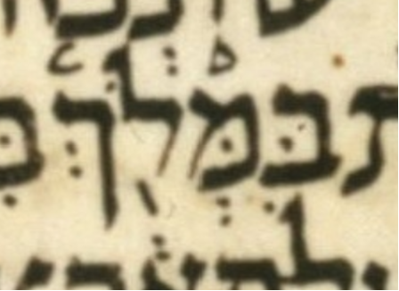

| n | 15 |
| citation:book | 2Kings |
| citation:c | 23 |
| citation:v | 33 |
| citation:position | 7 |
| author:name | Ben Denckla |
| author:mail | bdenckla@alum.mit.edu |
| author:confirmed | true |
| description | Note that while creating the pointed qere, the transcriber removed a dagesh from mem |
| lc:folio | Folio_219A |
| lc:column | 2 |
| lc:line | 12 |
| lc:credit | Credit: Sefaria.org. |
| reftext | מִמְּלֹ֖ךְ |
| refuni | mem hiriq mem dagesh sheva lamed holam tipeha final-kaf sheva |
| changetext | מִמְּלֹ֖ךְ |
| changeuni | mem hiriq mem dagesh sheva lamed holam tipeha final-kaf sheva |
| notes:note | The manuscript’s pointed ketiv (MPK) is בִּמְּלֹ֖ךְ. |
| notes:note-2 | The MPK’s בּ seems to carry a dagesh for the qere’s מ but it is rejected. See js24:15, which is similar. |
| notes:note-3 | Dotan does not note this case, though he does note js24:15. |
| transnotes:transnote:action | Add |
| transnotes:transnote:type | a |
| transnotes:transnote:beforetext | מִ |
| status | Pending |
| type | NoTextChange |